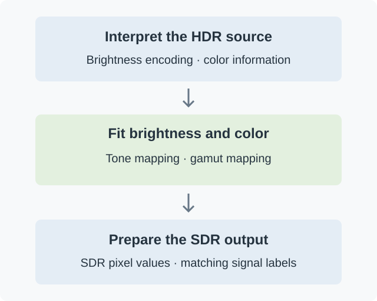

How HDR-to-SDR Tone Mapping Works
Converting HDR video to SDR means changing what the pixel values represent. It is more than removing an HDR label or choosing a different video codec.

Conceptual stages. A particular implementation may combine the brightness and color operations.
Read the signal correctly
The converter needs to know how the source encodes brightness and color. HDR video may use PQ or HLG transfer characteristics; those values cannot simply be treated as ordinary SDR values. The picture is converted into a representation suitable for processing.
Ten-bit video does not necessarily mean HDR: SDR can also use ten bits. Bit depth describes how many distinct values are available, while the transfer characteristics describe what those values mean in terms of light. A converter needs both pieces of information.
Source metadata can help describe the content, but a mastering display's peak brightness is not a measurement of every frame. Some implementations also analyze the picture to estimate its brightness range.
Fit the picture to the target
The tone-mapping curve determines how input brightness becomes output brightness. Its brighter end can flatten gradually, preserving differences in highlights within the smaller output range.
Colors need attention too. HDR material often uses a wider color gamut than an SDR target. Gamut mapping handles colors outside that target's range; it is related to tone mapping, but answers a different question. An implementation may solve both together.
Finally, the converter prepares pixel values and signaling appropriate for the SDR output. If the values are converted but still labeled as HDR, the player may interpret an otherwise valid picture incorrectly.
The curve is one part of the result
Changing the curve cannot correct mistaken source color information or an incorrectly configured output. Two conversions using the same curve name can also differ because their source-peak estimates, target brightness, or color handling differ.
When Emby performs this work during video transcoding, the converted frames are encoded into the stream sent to the player. The original media file remains the source; the conversion does not rewrite its pixels on disk.